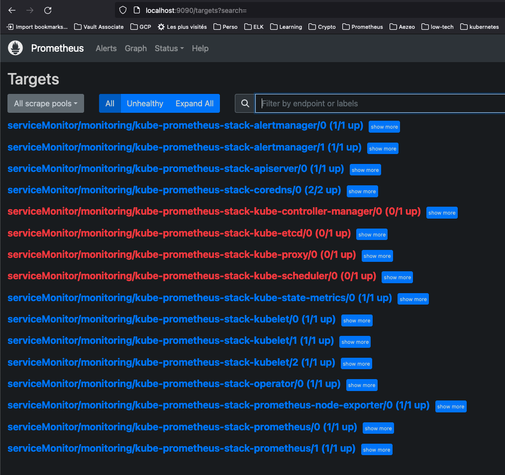

Kubernetes en local
Ce howto décrit comment préparer un environnement de développement 'Kubernetes-ready' avec 'Kind' et l'Ingress controller 'Nginx' sur son poste de travail.
Il sera le point d'entrée pour les autres howtos.
Installation de Kind
Tip
Kind = Kubernetes in Docker
Déploiement d'un cluster avec l'ingress controller Nginx
Info
# Création d'un cluster Kind avec extraPortMappings et node-labels
cat <<EOF | kind create cluster --config=-
kind: Cluster
apiVersion: kind.x-k8s.io/v1alpha4
nodes:
- role: control-plane
kubeadmConfigPatches:
- |
kind: InitConfiguration
nodeRegistration:
kubeletExtraArgs:
node-labels: "ingress-ready=true"
extraPortMappings:
- containerPort: 80
hostPort: 80
protocol: TCP
- containerPort: 443
hostPort: 443
protocol: TCP
EOF
# Vérification de l'installation
kind get clusters # -> nouveau cluster nommé 'kind'
### Déploiement d'un Ingress Controller Nginx
kubectl apply -f https://raw.githubusercontent.com/kubernetes/ingress-nginx/main/deploy/static/provider/kind/deploy.yaml
Test de l'Ingress
Application de test
Dans l'exemple qui suit, nous allons crér un Ingress pour router vers des services 'http-hello' très simples.
https://kind.sigs.k8s.io/examples/ingress/usage.yaml
kind: Pod
apiVersion: v1
metadata:
name: foo-app
labels:
app: foo
spec:
containers:
- command:
- /agnhost
- netexec
- --http-port
- "8080"
image: registry.k8s.io/e2e-test-images/agnhost:2.39
name: foo-app
---
kind: Service
apiVersion: v1
metadata:
name: foo-service
spec:
selector:
app: foo
ports:
# Default port used by the image
- port: 8080
---
kind: Pod
apiVersion: v1
metadata:
name: bar-app
labels:
app: bar
spec:
containers:
- command:
- /agnhost
- netexec
- --http-port
- "8080"
image: registry.k8s.io/e2e-test-images/agnhost:2.39
name: bar-app
---
kind: Service
apiVersion: v1
metadata:
name: bar-service
spec:
selector:
app: bar
ports:
# Default port used by the image
- port: 8080
---
apiVersion: networking.k8s.io/v1
kind: Ingress
metadata:
name: example-ingress
annotations:
nginx.ingress.kubernetes.io/rewrite-target: /$2
spec:
rules:
- http:
paths:
- pathType: Prefix
path: /foo(/|$)(.*)
backend:
service:
name: foo-service
port:
number: 8080
- pathType: Prefix
path: /bar(/|$)(.*)
backend:
service:
name: bar-service
port:
number: 8080
Testons l'Ingress controller
Test
# Test
kubectl apply -f https://kind.sigs.k8s.io/examples/ingress/usage.yaml
curl localhost/foo/hostname # renvoie 'foo-app'
curl localhost/bar/hostname # renvoie 'bar-app'
Nettoyage
Cleaning
kubectl delete ingress example-ingress
kubectl delete services foo-service bar-service
kubectl delete pods foo-app bar-app
Compatibilité du cluster avec 'kube-prometheus-stack'
| Doc | URL |
|---|---|
| Medium - fix KinD missing Prometheus operator targets | https://medium.com/@charled.breteche/kind-fix-missing-prometheus-operator-targets-1a1ff5d8c8ad |
Pour éviter de réinstaller complètement notre cluster au moment où nous nous intéresserons à Prometheus, nous allons tout de suite réinstaller ce dernier et appliquer un patch qui permettra de corriger le fait que certaines 'targets' ne soient pas accessibles car elles écoutent sur l'adresse loopback par défaut. Bien sûr nous conserverons notre Ingress Controller Nginx.

kind delete cluster --name=kind
cat <<EOF | kind create cluster --config=-
kind: Cluster
apiVersion: kind.x-k8s.io/v1alpha4
kubeadmConfigPatches:
- |-
kind: ClusterConfiguration
# configure controller-manager bind address
controllerManager:
extraArgs:
bind-address: 0.0.0.0
# configure etcd metrics listen address
etcd:
local:
extraArgs:
listen-metrics-urls: http://0.0.0.0:2381
# configure scheduler bind address
scheduler:
extraArgs:
bind-address: 0.0.0.0
- |-
kind: KubeProxyConfiguration
# configure proxy metrics bind address
metricsBindAddress: 0.0.0.0
nodes:
- role: control-plane
kubeadmConfigPatches:
- |
kind: InitConfiguration
nodeRegistration:
kubeletExtraArgs:
node-labels: "ingress-ready=true"
extraPortMappings:
- containerPort: 80
hostPort: 80
protocol: TCP
- containerPort: 443
hostPort: 443
protocol: TCP
EOF
# Vérification de l'installation
kind get clusters # -> nouveau cluster nommé 'kind'
### Déploiement d'un Ingress Controller Nginx
kubectl apply -f https://raw.githubusercontent.com/kubernetes/ingress-nginx/main/deploy/static/provider/kind/deploy.yaml